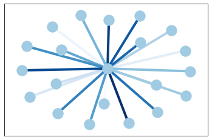

Edge Colormap¶
%matplotlib inline
import networkx as nx
import matplotlib as plt
G = nx.star_graph(20)
pos = nx.spring_layout(G)
nx.draw_networkx(G, pos, node_color='#A0CBE2', edge_color=range(20), width=4, edge_cmap=plt.cm.Blues, with_labels=False)
